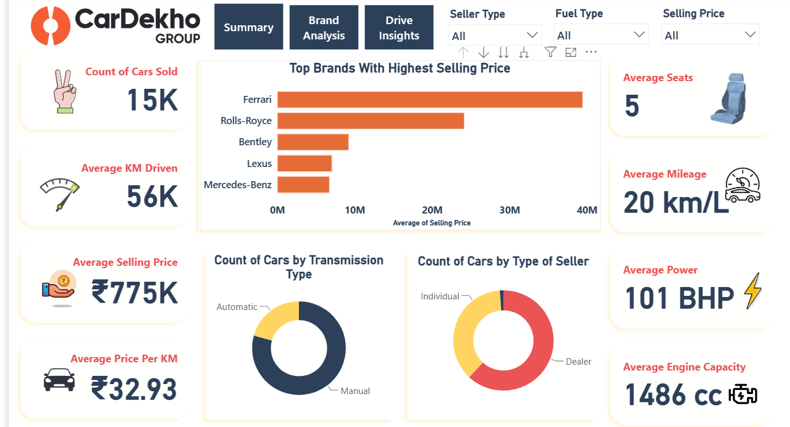
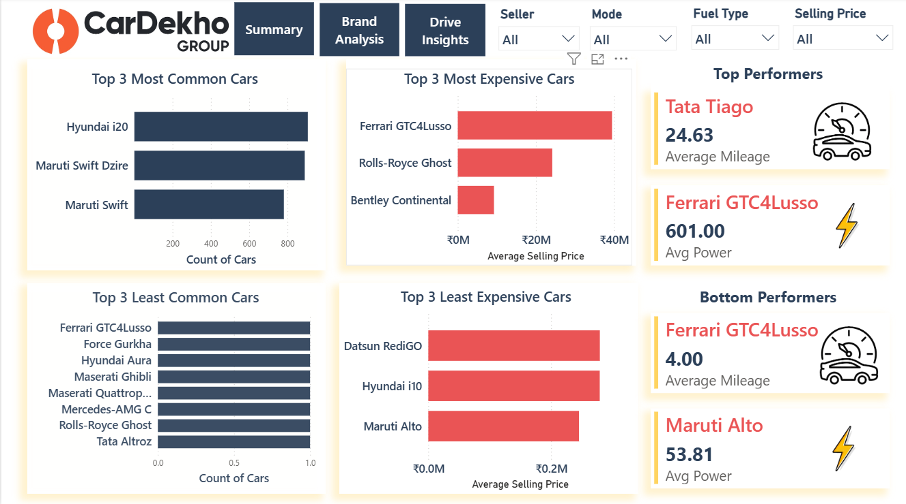
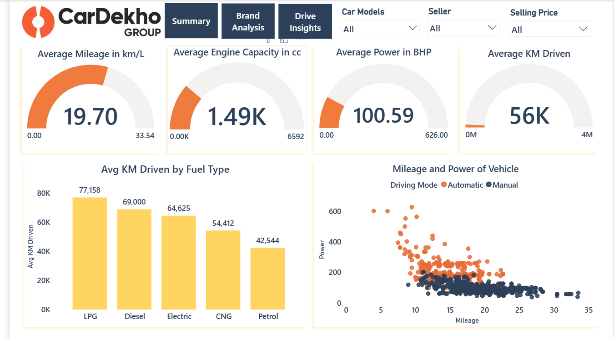

Portfolio analysis · SQL → Power BI → web
What actually moves the price of a used car in India, measured across 15,411 CarDekho listings. The short answer is not the odometer — it is what is under the bonnet.
Across every numeric field in the dataset, maximum power correlates with selling price at r = 0.75 — by far the strongest signal. Kilometres driven, the number buyers negotiate hardest over, correlates at r = −0.08: statistically almost nothing. A car with 100,000 km on it lists only 25% below one with under 20,000 km.
The practical read for a marketplace: price guidance should lean on engine and segment attributes, and treat odometer as a trust signal rather than a price lever.
Every numeric field, ranked by strength. Blue raises price, red lowers it.
selling_price, n = 15,411.The same relationship in rupees: each power band roughly doubles into the next.
Flat for three years, then a steady slide: about 7.6% of value a year, leaving 45% at the ten-year mark.
The whole range from nearly-new to 100,000 km+ costs just 25% of value.
Manual dominates the listings; automatic dominates the price. Diesel carries a 52% premium over petrol at near-equal share.
Maruti is one in every three listings at a ₹4.65L median. BMW is one in thirty-six, at five times the price.
Power (r = 0.75) and engine size (r = 0.59) explain resale value; kilometres driven (r = −0.08) does not. An automated valuation should weight segment and powertrain first.
Automatics are 20.7% of listings but 2.1× the median price. Sourcing more automatic stock raises average ticket size without touching margin.
The curve is flat until year three, then drops ~7.6% a year. Stock bought at 3–4 years and sold quickly avoids the steepest part of the slide.
Maruti and Hyundai supply half the listings under ₹5.5L; BMW, Mercedes and Audi supply 6% above ₹17L. Volume and luxury need separate pricing logic and separate acquisition funnels.
The analysis was modelled and visualised in Power BI Desktop first — three pages of DAX measures,
cross-filtering slicers and page navigation. These are the screens the .pbix in the repository
opens to; the charts above re-render the same aggregates so the work can be read without installing anything.



The CarDekho listings dataset (15,411 rows, 13 fields) was profiled and validated in SQL — null sweep across
all columns, then aggregation with GROUP BY, window functions and CTEs for the brand, fuel,
transmission and age cuts. Visuals were modelled in Power BI with DAX measures; this page re-renders the same
aggregates in the browser so the analysis can be read without opening a .pbix file. Every figure here is
reproducible from the SQL in the repository.
Median, not mean, throughout. One Ferrari at ₹3.95 crore drags the mean price to ₹7.75L against a ₹5.56L median, so medians are used for every comparison.